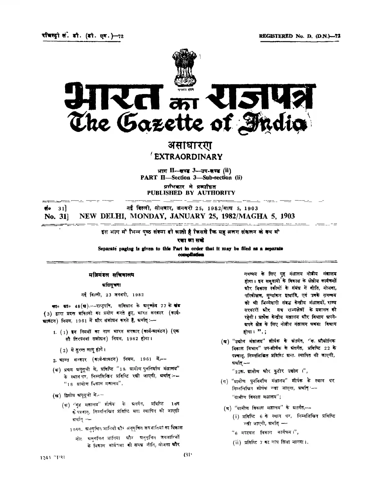
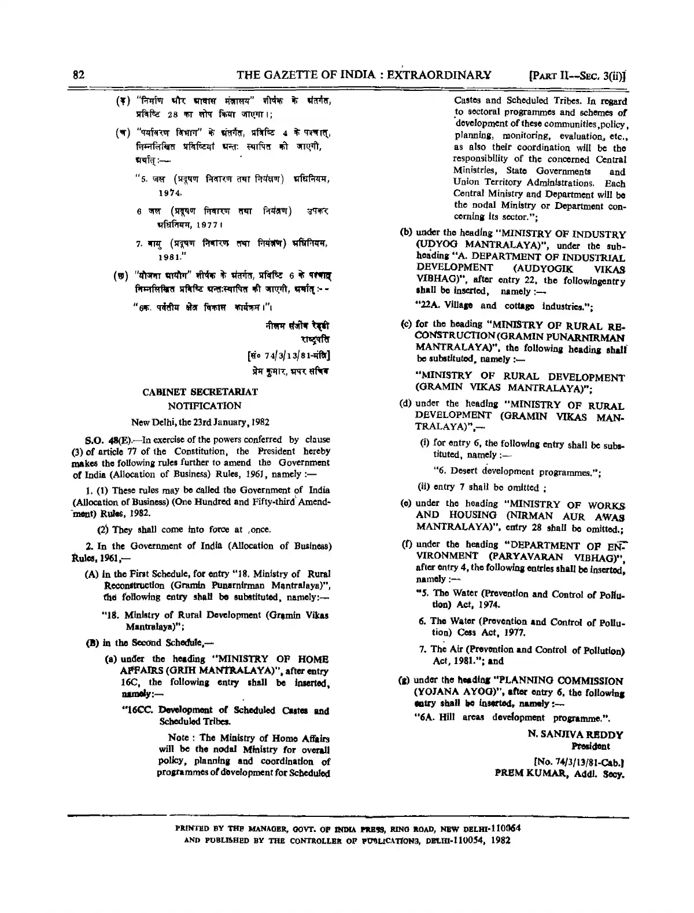

Amendment #153 (S.O. 48(E), 1982)
9 changes: 1 to the First Schedule, 8 to the Second Schedule. 9 applied
What it did to the ministries
- renamedMinistry of Rural Reconstruction is renamed Ministry of Rural Development change 1, 4, 5, 6 · histories: Rural Development
- grewDepartment of Environment grows from 4 to 7 subjects change 8 · histories: Environment & Climate
The order, page by page
Page 1 of 2

Page 2 of 2

123456789Schedule 1 › entry 18
- 18. Ministry of Rural Development
applied at schedule 1 › ministry 18 in the Rules after #153
after Schedule 2 › MINISTRY OF HOME AFFAIRS › entry 16C
- 16CC. Development of Scheduled Castes and Scheduled Tribes.
- Note The Ministry of Home Affairs will be the nodal Ministry for overall policy, planning and coordination of programmes of development for Scheduled [PART II--SEC. 3(ii)] Castes and Scheduled Tribes. In regard to sectoral programmes and schemes of development of these communities, policy…
applied at schedule 2 › ministry MINISTRY OF HOME AFFAIRS › part I › group_heading The following subjects which are relatable to… in the Rules after #153
read page break
after Schedule 2 › MINISTRY OF INDUSTRY › DEPARTMENT OF INDUSTRIAL DEVELOPMENT › entry 22
- 22A. Village and cottage industries.
applied at schedule 2 › ministry MINISTRY OF INDUSTRY › department A › group_heading IV › entry 22A in the Rules after #153
Schedule 2 › MINISTRY OF RURAL RE- CONSTRUCTION
- MINISTRY OF RURAL DEVELOPMENT
applied at schedule 2 › ministry MINISTRY OF RURAL DEVELOPMENT in the Rules after #153
Schedule 2 › MINISTRY OF RURAL DEVELOPMENT › entry 6
- 6. Desert development programmes.
applied at schedule 2 › ministry MINISTRY OF RURAL DEVELOPMENT › entry 6 in the Rules after #153
Schedule 2 › MINISTRY OF RURAL DEVELOPMENT › entry 7
applied at schedule 2 › ministry MINISTRY OF RURAL DEVELOPMENT › entry 7 in the Rules after #153
Schedule 2 › MINISTRY OF WORKS AND HOUSING › entry 28
applied at schedule 2 › ministry MINISTRY OF WORKS AND HOUSING › entry 28 in the Rules after #153
after Schedule 2 › DEPARTMENT OF EN- VIRONMENT › entry 4
- 5. The Water (Prevention and Control of Pollution) Act, 1974.
- 6. The Water (Prevention and Control of Pollution) Cess Act, 1977.
- 7. The Air (Prevention and Control of Pollution) Act, 1981.
applied at schedule 2 › department DEPARTMENT OF ENVIRONMENT › entry 5 in the Rules after #153
after Schedule 2 › PLANNING COMMISSION › entry 6
- 6A. Hill areas development programme.
applied at schedule 2 › ministry PLANNING COMMISSION › entry 6A in the Rules after #153
How this document was read
From the Government of India (Allocation of Business) Rules, 1961 and their amendments, as published by the Cabinet Secretariat (cabsec.gov.in), read by orgpedia. The readings of the older scanned gazettes have known gaps.